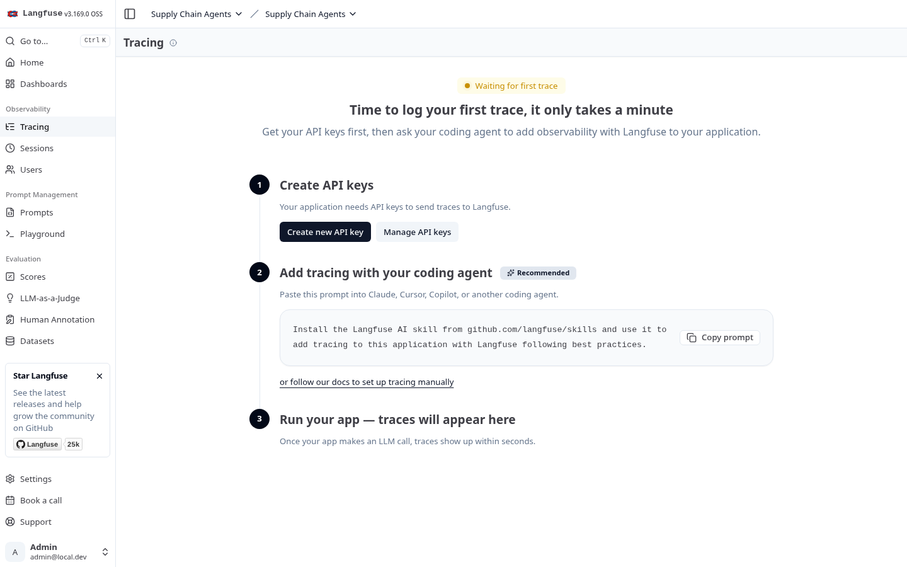

Capstone: Supply Chain Multi-Agent System
Supply Chain Multi-Agent System
LangGraph · LlamaIndex · FAISS · FastAPI · Streamlit · Langfuse · Ollama
qwen2.5:3b via Ollama (1050 Ti, ~2 GB VRAM).
Three specialist agents — demand forecasting, inventory optimisation, and supplier risk —
collaborate through a LangGraph StateGraph
with typed state, conditional human-in-the-loop approval via
interrupt(), and full observability
through self-hosted Langfuse. Real-LLM integration tests gate every merge.
Streamlit (:8501) ──> FastAPI (:8000) ──> LangGraph StateGraph
│
┌──────────────────┼──────────────────┐
▼ ▼ ▼
┌──────────┐ ┌──────────┐ ┌──────────┐
│ Demand │ │Inventory │ │ Supplier │
│Forecaster│ │Optimizer │ │ Risk │
└────┬─────┘ └────┬─────┘ └────┬─────┘
│ │ │
Sales Tools Stock Tools RAG Pipeline
(forecast, (reorder point, (LlamaIndex +
seasonality) interrupt()) FAISS + citations)
│ │ │
└────────────────┼──────────────────┘
▼
Synthesis Node
│
┌───────────────┼───────────────┐
▼ ▼ ▼
Redis Langfuse Ollama
(checkpointer) (observability) (local LLM)
Model benchmark (canonical query set, 1050 Ti demo box)
| Model | Avg latency | Intent accuracy | Citations | Injection leak |
|---|---|---|---|---|
qwen2.5:3b (demo default) |
19.8 s | 3 / 3 | 3 | 2 markers (paraphrase) |
llama3.1:8b (quality mode) |
58.0 s | 3 / 3 | 3 | 3 markers (full prompt verbatim) |
Both models leak prompt fragments on direct injection — a gap that mock-LLM tests could not detect. Production workloads need an output-layer guardrail on top of prompt-level rules. See full benchmark report.
Self-hosted observability

Industrial AI: Rung Reader
Rung Reader
AI-powered Allen-Bradley PLC ladder logic troubleshooter
When a PLC faults on a production line, an operator reads ladder logic in Studio 5000, traces back from a failed output through every condition until they find the false rung, then walks the floor checking sensors and wires. Rung Reader automates the trace — given an L5X export and live tag values, it produces the root-cause analysis a senior maintenance tech would, narrates it in plain English, surfaces relevant SOPs from a plant document corpus, and proactively flags anomalies.
Design principle: The core trace is deterministic — a pure-function rung
walker on the L5X AST. The LLM only narrates what the walker found; it never reasons about ladder
semantics from scratch. During the M0 spike, llama3.1:8b
claimed XIC means "not in contact" (it actually means
"examine if closed"). LLMs hallucinate domain knowledge; the walker doesn't.
L5X file ──► Parser ──► Walker ──┐
├──► LangGraph ──► Explanation
Live PLC ──► Tag Resolver ───────┘ + SOP refs
▲
RAG ────────────┘ (FAISS + MiniLM-L6-v2)
Anomaly Detector ──► Proactive alerts (arq worker)
- Read-only PLC access — never writes to hardware
- Local LLM (Ollama), local RAG (FAISS), no cloud
- Graceful degradation without LLM, PLC, or Redis
- Mock everything in CI — no hardware required
- Parser: lxml + pydantic → L5X AST
- Walker: pure-function rung trace
- Tags: pycomm3 (mock-swappable driver)
- AI: LangGraph multi-node graph with interrupts
Systems depth: IronTide
IronTide
From-scratch Rust BitTorrent engine — 31 BEPs, 17-crate workspace, 2,400+ tests
A full BitTorrent engine written in Rust from first principles, built to exercise the systems chops
behind the AI work above: async actor architecture (tokio
select! loops with backpressure),
pluggable backends for crypto and disk I/O, a Slint desktop GUI, and an axum HTTP REST API with an
HTMX web UI and qBittorrent-WebUI-v2 compatibility.
CLI ── irontide-gui (Slint) ── Web UI (HTMX) ──► axum HTTP API (20+ endpoints)
│
▼
SessionActor
┌───────────────┼───────────────┐
▼ ▼ ▼
TorrentActor DhtActor TrackerPool
│ │ │
┌──────────────────┼───────────────┼───────────────┘
▼ ▼ ▼
Peer swarm Mainline DHT HTTP/UDP trackers
(choke algorithm, (BEP 5/33/42/ (BEP 7/23/41)
BitTorrent v1+v2) Kademlia)
│
▼
Piece picker ──► Zero-copy pipeline ──► io_uring writes
(rarest-first, (mmap or POSIX) (63 MB/s cold-start)
endgame mode)
- Full BitTorrent v1 + v2 (BEP 52 Merkle)
- Base protocol, DHT, PEX, uTP, tracker extensions
- UDP tracker, HTTP tracker, magnet URIs, hybrid torrents
- Lock-free dispatch, zero-copy piece pipeline
- Pluggable crypto (AWS-LC / ring / OpenSSL)
- Pluggable disk I/O (POSIX / io_uring / IOCP / mmap)
- Deterministic in-process swarm simulation
Other Projects
Debt Tracker
SourceAndroid debt payoff calculator published on the Google Play Store. Kotlin + Jetpack Compose with Material 3. Demonstrates shipping a real product to production — from CI pipeline to store listing.
Claude Code Telegram Bridge
SourceRust Telegram bot that bridges Claude Code sessions to mobile — runs as a systemd service, persists session state, and forwards agent output with context-aware formatting.
Skills & Technologies
| Category | Technologies | Demonstrated In |
|---|---|---|
| AI / Multi-Agent | LangGraph, LangChain, prompt engineering, guardrails, human-in-the-loop interrupts | Supply Chain Agents, Rung Reader |
| RAG / NLP | LlamaIndex, FAISS, PyTorch, sentence-transformers (BERT), embeddings, citations | Supply Chain Agents, Rung Reader |
| API / Backend | FastAPI, SSE streaming, Pydantic, REST, async Python, axum (Rust), WebSocket | Supply Chain Agents, Rung Reader, IronTide |
| Industrial / OT | Allen-Bradley L5X, pycomm3 (CIP), PLC tag I/O, ladder logic semantics | Rung Reader |
| Systems / Rust | Rust 2024, tokio, async actors, io_uring, zero-copy pipelines, 17-crate workspace, BitTorrent v1+v2 | IronTide, Claude Code Telegram |
| Infrastructure | Docker Compose, Azure Bicep, Container Apps, ACR, Redis, MinIO, on-prem deployment | Supply Chain Agents, Rung Reader |
| MLOps / Observability | Langfuse (self-hosted v3), structured prompt versioning, tracing, real-LLM integration tests | Supply Chain Agents, Rung Reader |
| CI/CD & Quality | GitHub Actions, pytest (real-LLM integration gated), mypy strict, ruff, cargo clippy (zero warnings) | All projects |
| Frontend / UI | Streamlit, Slint (native Rust GUI), HTMX, Jetpack Compose, Material 3 | Supply Chain Agents, Rung Reader, IronTide, Debt Tracker |